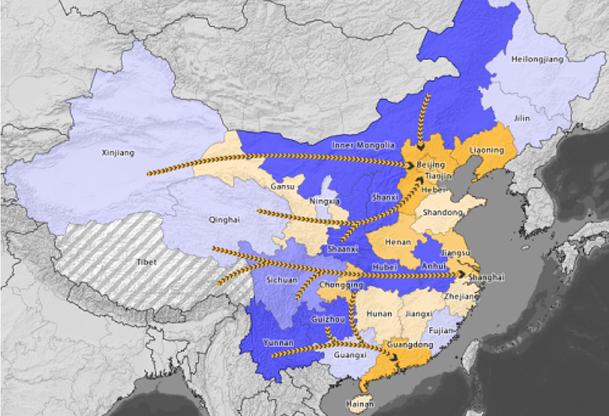

Social Reconstruction of Dam-induced Resettled Community
Between Tibet and Yunnan’s deep gorges, the large elevation gradient provides prime conditions for hydropower projects. A couple hydroelectric projects are built on the upper Mekong River, also called the Lancang River. This site tells you about four dams on the Lancang River, including Manwan, Dachaoshan, Nuozhadu, and Xiaowan, and their social reconstruction in the communities of the resettled villages.
Created by Yingqi Tang, Geography M.S Candidate, Oregon State University
Introduction
Involuntary movement, also known as forced displacement, has affected millions of people worldwide. At the end of 20th century, approximately 80 million people had been displaced due to hydropower projects, including 22.5 million people in China.
Dam-induced migration not only causes material loss, such as loss of homes and agricultural lands, but this migration also causes social capital loss, disrupting individuals’ long term sustainable social network. In order to understand the factors that might affect social reconstruction in resettled communities, this research studies community social environments at four dam sites (Manwan, Dachaoshan, Xiaowan, and Nuozhadu) on the Lancang River in China.
Data is drawn from the “Community Environment” of The Lancang River Dam-induced Resettlement Survey (2010). This survey asked questions about participants’ economic health, social networks, and perceived well-being. Chi-square tests were used to compare the differences in survey answers between non-resettled and resettled communities at each dam site.
The result indicated that the resettled communities of Manwan, Dachaoshan and Nuozhadu have higher community environment satisfaction than their non-resettled counterparts, while Xiaowan shows the opposite. Factors, like time for adaption, type of relocation compensation, as well as households’ income, labor, and other resources, and demographics (ethnicity and age), might affect social reconstruction in resettled communities. Identifying potential relationships among these factors and social capital will help to promote strategies for social reconstruction necessitated by future dam-induced displacement.
Impoverishment Risk and Reconstruction Model

Michael Cernea,1997
The process of dam-induced migration is complex. It should not be seem as a problem of material loss. These identified risks are interconnect, interrelate, and interactive.
The risk of social disarticulation is the main focus of this study. Social disarticulation means that change of physical location disassembles existing social relationships, including kinship, friendship, and business circles. Building social harmony has played a major role in China's long history (Sundararajan, 2015).
Lancang River
The Lancang river is one of the three parallel rivers in Yunnan province, China. It is also known as the Upper Mekong River. The Lancang river starts at Qinghai province, and flows through Xizang province(Tibet) and Yunnan province. Then the Lancang River becomes the border river between Laos and Burma.
Driven by economic reform in 1980, population growth, and high electricity demand, the Chinese government proposed the “West-East electricity transmission project” (Ioanides and Tilt, 2015; Magee, 2012). This project is incredibly important to China’s desire to boost economic development in the western part of the country and drive demand for clean energy. And the construction of dams inevitably displaces millions of people (Chang et al., 2010)

China's West-East Electricity Transfer (Created by David Tyler Gibson and James Conkling)
Meanwhile, the Yunnan government asked nationally regonized hydrologists to discover the potential capacity of hydropower development. Later, 14 cascade dams were designed and planned on the Lancang River, including Manwan, Dachaoshan, Xiaowan, and Nuozhadu(Wang et al, 2014). In 2020, the estimated magnitude of hydropower development on Lancang Jiang should reach 76.4% (Yan and Shi 2016).
Definition of large dam:
The International Commission on Large Dams states that a large dam either is at least 15 meters tall from its lowest foundation to its crest, or it stores more than 3 million cubic meters of water with a height between 5 meters and 15 meters.
Legend
Boundary
Lancang River
Lancang County
Fengqing County
Yun County
Dam(Hover over and check more info)
Manwan Dam
Completed time: 1995(source from international rivers)
Location: middle reach of the Lancang River
Ownership: At the beginning, it was co-owned by the Yunnan provincial government and the Chinese Ministry of Water Resources and Electirc Power. Currently, it is owned by Hydrolancang, a subsidiary of China Huaneng Group.
Measurement: height:132 m; crest length: 418m; backwater: 70km; inundation: 6225 mu (411 ha) of farmland and 8508 mu (562 ha) of woodlands
Details of resettlement: 114 villages in 8 townships and 4 counties(Jingdong, Yun, Fengqing, and Nanjian)
Manwan Dam(source:International Rivers)
Legend
Yun County
Boundary
Dam(Hover over and check more info)
Dachaoshan Dam
Completed time: 2003(source from international rivers)
Location：middle reach of the Lancang River
Ownership: Yunnan Dachaoshan Hydropower Co. Ltd
Measurement: height:111 m; crest length: 460.39m; catchment area at dam site: 121000 km2; inundation: paddy field was 1562 mu, dry field was 4762 mu (Chinese National Committee on Large dams, and Tilt)
Dachaoshan dam(source: RCC dams)
Legend
Yun County
Boundary
Dam(Hover over and check more info)
Xiaowan Dam
Completed time: 2010(Chinese document)
Second tallest dam in the world
Location: middle reach of the Lancang River
Ownership: own by Hydrolancang, a subsidiary of China Huaneng Group
Measurement: height:292m; crest length:902m; Catchment area at dam site: 113300 km2
Xiaowan dam(Source:International Rivers)
Legend
Fengqing County
Boundary
Dam(Hover over and check more info)
Nuozhadu Dam
Completed time: 2012(source from international rivers)
Location: downstream of the Lancang River
Owenership: own by Hydrolancang, a subsidiary of China Huaneng Group
Measurement:height: 261.5m;crest length:608.16m; catchment area: 144710 km2
Nuozhadu dam(source:Eco-bussiness.com)
Legend
Lancang County
Boundary
Dam(Hover over and check more info)
The Lancang River Dam-induced Resettlement Survey(2010)
The survey used in this study had a cross-sectional structure: local, non-resettled communities are the control variable, chosen specifically because the non-resettled communities shared features, economic, demographic, etc., with the other resettled villages included in the survey. This study used this control to compare resettled communities at four dam sites.
This survey data was obtained from Dr. Byran Tilt and researchers at Yunnan Normal University in Kunming City, China (2010). The data covers households from more than 30 villages in Fengqing, Yun and Lancang counties. The data was collected following a one-week training workshop, and the research team ensured the accuracy of the data by running quality control checks (Tilt and Gerkey 2016).
Questions:
1.I feel loyal to other villagers.
我对这个村子的人感到忠诚
2.I am the same as other villagers.
我和住在这个村子的人一样
3.If I need advices, I will ask other villagers.
如果我需要建议，我会去询问这个村子的人
4.I believe that my neighbors will help me under urgent circumstance.
我相信紧急情况下我的邻居会帮助我
5.I would like to improve my village with other people.
我会和其他人一起合作来改善这个村子
6.I won’t move out from the village.
我不会搬离这里
7.In general, I love to live in the village.
总体来说，我喜欢住在这里
8.In general, I am happy.
总体来说，我很快乐
9.I often stop on the way and greet with other villagers.
我经常在路上停下和这个村子的人闲聊
10.My neighbors often come over to my home.
邻居经常来我家拜访
11.My neighbors and I often borrow and help each other.
我和邻居之间经常互借东西和互相帮忙
12.Individuals in this village will pay back the money.
这个村里的人借钱会还的
13.In general, I can believe most individuals in this village.
总体来说，我可以相信大多数村里的人
14.From the past five years, loyalty has improved in this village.
在过去的5年中，村里人的可信度有所提高
15.Compared to other village, this village does not have many problems.
和别的村庄比，这个村庄没什么问题
16.Would you like to support a government project that does not benefit to your family but good for the whole village?
现在有一个政府项目，这个项目对您家没有好处，但是对整个村子有好处，您是否还会支持
17.Individuals in this village can solve their own problem.
村里的人可以自己解决矛盾
Result:
Click the buttom and check out the result for this study.
Legend
Boundary
Lancang County
Fengqing County
Yun County
Dam(Hover over and check more info)
Time of Adaptation
Displaced people use different coping strategies to adapt their environments. Xi and Hwang (2011) have conducted a coping strategy analysis based on communities displace from around the Three Gorges Dam. They stated that problem-focused coping and emotion-focused coping are two popular strategies.
Problem-focused coping aims to let people earned back a sense of control by solving conflicts through negotiation, while emotion-focused coping aims to let people view their failure and turn it into an opportunity to improve the situation. Based on Questions 15 and 17, it is clear that all surveyed villages have problems. Villagers from the Manwan, Dachaoshan and Nuozhadu resettled communities have more faith in their ability to solve problems by themselves.
Tilt (2015) also reported that after facing income reductions due to failure of agriculture production, people switched their income sources from agriculture to small business, industrial sectors, or movement to urban areas.
Due to the limited sources available to discuss the adaptive resilience of resettled villages, more research into this issue should be done in the future.
Legend
Boundary
Lancang County
Fengqing County
Yun County
Dam(Hover over and check more info)
Compensation
Compensation is a key financial tool for resettlements. The purpose of compensation is to improve wealth for resettled people and decrease inequality caused by displacement. Compensation aims to cover the material losses after relocation (Zhang et al., 2015).
In China, the central government provides laws and policies as a standard for compensation designers but the methods of measuring compensation vary between projects. After years of reform, the land management law and compensation policy added more details to the compensation design. Resettled villagers from the four dams considered in this study received different levels of compensation. The difference in compensation affects resettled villagers' financial resource for adaptation in the new community environment. Without sufficient and stable financial supports, resettled villagers are more likely to suffer in a certain level of depression(Wilmsen et al, 2011).
Legend
Boundary
Lancang County
Fengqing County
Yun County
Dam(Hover over and check more info)
Labor, Income and Resources
As Cernea (1997) mentioned in the risk and reconstruction model, impoverishment often becomes a problem for resettled villagers, even though they receive compensation. Almost 75% of the population in Yunnan are farmers, so arable agricultural land is a key resource to keep income stable.
Historically, people settled this area because it was easy to irrigate, had fertile soil, and a suitable climate for agriculture. However, when hydropower development rushed into the Lancang River Basin, these agricultural areas also became good locations for hydropower projects. As a result, it is difficult to find new, equally good agricultural areas for relocation (Chen, 2008). Manwan, Dachaoshan and Xiaowan reported a certain level of impoverishment in the resettled communities. Nuozhadu was under construction, so no report is associated with the issue.
Legend
Boundary
Lancang County
Fengqing County
Yun County
Dam(Hover over and check more info)
Demographics
Displacement plans normally ignore cultural elements. Cultural diversity increased the negative impact to resettled communities (Chen, 2008).
The major ethnic groups in this study include Han, Yi, and Lahu populations, as well as small populations of Bulang, Dai, Hui, Jingpo, Hani, Wa and Yao people. Different ethnic identities lead to different choices in terms of styles of houses, agricultural products, clothes, customs, and social values. Most people have established their "guanxi" by looking for people with familiar culture.
Meanwhile, older people spent most of their lives practicing traditional agricultural production. It is more difficult for them to adjust than the young people.
Rural agriculture is an important source of income for all villagers. The change of demographics closely connect to and affect working age labor (18 to 60). (Anriquez and Stloukal, 2008)
Ethnicity and Age Graphics
Legend
Boundary
Lancang County
Fengqing County
Yun County
Dam(Hover over and check more info)